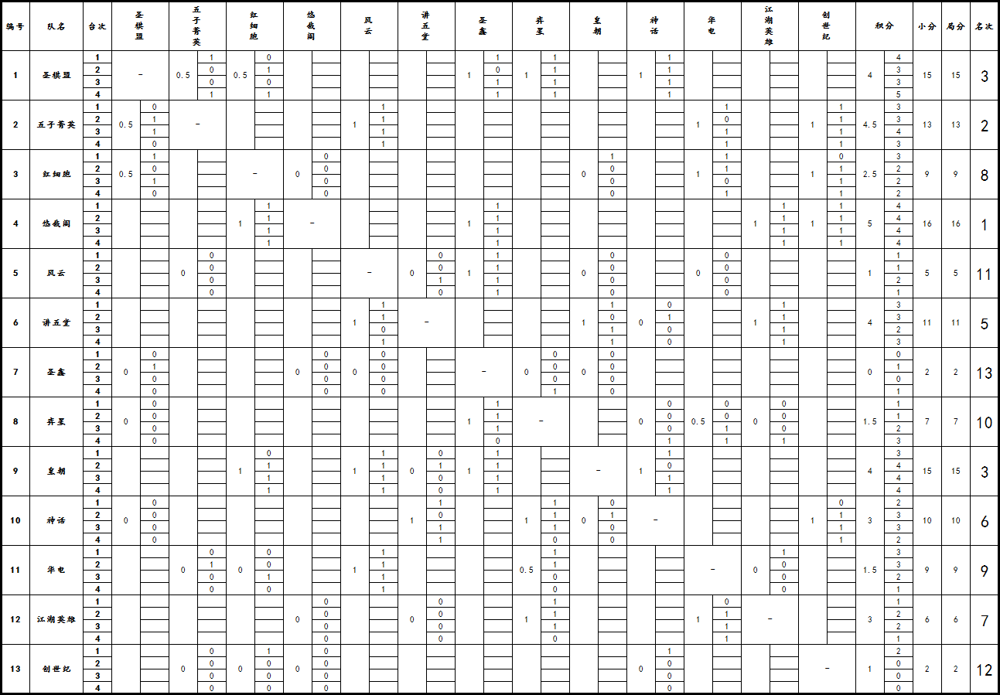

2013暑假杯家族赛第五轮积分榜
#1 2013暑假杯家族赛第五轮积分榜 作者：一夜晴 发表时间：2013-8-19 10:13:31
| 编号 | 队伍 | 已赛 | 场胜 | 场负 | 场平 | 局胜 | 局负 | 局平 | 大分 | 小分 | 局分 | ||
| 4 | 悠哉阁 | 5 | 5 | 0 | 0 | 16 | 0 | 0 | 5 | 16 | 16 | ||
| 2 | 五子菁英 | 5 | 4 | 0 | 1 | 13 | 3 | 0 | 4.5 | 13 | 13 | ||
| 1 | 圣棋盟 | 5 | 3 | 0 | 2 | 15 | 5 | 0 | 4 | 15 | 15 | ||
| 9 | 皇朝 | 5 | 4 | 1 | 0 | 15 | 5 | 0 | 4 | 15 | 15 | ||
| 6 | 讲五堂 | 5 | 4 | 1 | 0 | 11 | 5 | 0 | 4 | 11 | 11 | ||
| 10 | 神话 | 5 | 3 | 2 | 0 | 10 | 10 | 0 | 3 | 10 | 10 | ||
| 12 | 江湖英雄 | 5 | 3 | 2 | 0 | 6 | 10 | 0 | 3 | 6 | 6 | ||
| 3 | 红细胞 | 5 | 2 | 2 | 1 | 9 | 11 | 0 | 2.5 | 9 | 9 | ||
| 11 | 华电 | 5 | 1 | 3 | 1 | 9 | 11 | 0 | 1.5 | 9 | 9 | ||
| 8 | 弈星 | 5 | 1 | 3 | 1 | 7 | 13 | 0 | 1.5 | 7 | 7 | ||
| 5 | 风云 | 5 | 1 | 4 | 0 | 5 | 15 | 0 | 1 | 5 | 5 | ||
| 13 | 创世纪 | 5 | 1 | 4 | 0 | 2 | 14 | 0 | 1 | 2 | 2 | ||
| 7 | 圣鑫 | 5 | 0 | 5 | 0 | 2 | 18 | 0 | 0 | 2 | 2 | ||
|
排名方法
暑假杯五子棋家族争霸赛轶序册 /ziyou/HTML/4151.html 星火道场初级群：169143174 |
|||||||||||||
#2 Re:2013暑假杯家族赛第五轮积分榜 作者：屏蔽 发表时间：2013-8-19 19:19:12
#3 Re:2013暑假杯家族赛第五轮积分榜 作者：釣鱼岛岛主 发表时间：2013-8-19 19:54:14
屏蔽你可真闲啊#4 Re:2013暑假杯家族赛第五轮积分榜 作者：黄药师 发表时间：2013-8-19 20:14:12
无禁手吗？#5 Re:2013暑假杯家族赛第五轮积分榜 作者：小帮帮 发表时间：2013-8-19 20:23:54
悠哉阁是哪些大师在战斗，战绩如此辉煌！
#6 Re:2013暑假杯家族赛第五轮积分榜 作者：釣鱼岛岛主 发表时间：2013-8-19 20:26:27
大圣 熊熊 云中漫步 思无邪